|
Table of Contents < - - - return Chapter 4 < - - - next
World War II Story by Robert F. Gallagher Chapter 3 - Camp Haan, California What
makes a regiment of soldiers a more noble object of view than the same mass
of mob? Their arms, their dresses, their banners, and the art and artificial
symmetry of their position and movements. -
Lord Byron Discipline is the soul of an army. - George Washington _______________________ A New Camp - A New Adventure We finally learned we were located just outside the town of Riverside, California, about thirty miles south of Los Angeles. As we sat in the rail cars, we could hear the roar of aircraft landing and taking off nearby. We were sure we were at an air base, and we began to congratulate each other we were going to be part of the Army Air Force. At that time, the Air Force was a branch of the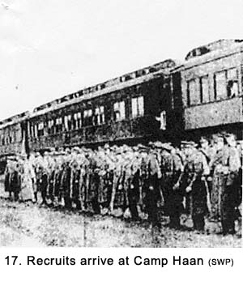 Army and not a separate service like it is today. However, when we unloaded at about 1800 hours there were signs on the platform identified our new location as an antiaircraft camp named Camp Haan (See Fig.17). We were more than a little disappointed. I said dejectedly to one of my new buddies, "I was hoping that we were going to be Air Force but it sure doesn't look like it." He replied, "We're about as far removed from the Air Force as you can get. In fact, we're anti-air force only they call it antiaircraft." The planes we heard were stationed at March Air Force Base, across the road and just east of our new camp. Camp Haan was large and, at its peak, had a population of 80,000. It was typical of many other camps all over the country that trained recruits to be soldiers. Like Camp Grant, this place lacked beauty and could exist only as a place to train soldiers. All buildings were made of wood and had a temporary look about them. There wasn't a tree, bush, blade of grass, or anything else green throughout its sprawling acres. Open areas were covered with gravel. The paved streets were laid out in a grid-like pattern that somehow accentuated the monotonous look of the place (See Fig.18). Clean it was. Not a piece of litter could be found anywhere, all picked up and disposed of in a process we would learn about later by the abundance of laborers called GIs. Battalions were segregated into designated areas, the only difference between them a small red sign with white lettering for each unit, about two feet square, that was attached to buildings facing the road. We were marched in formation from the train to Area #7, our base for most of the time we were in California. We spotted a PX (Post Exchange) and a movie theater, and wondered if they were the only ones to service this huge camp.
The huts we were assigned to were fourteen-feet by fourteen-feet in size (See Fig. 19). They were made of plywood on the outside with exposed two-by-four lumber showing inside and they looked like a good wind would blow them away. They had no insulation, inside finish, or even a coat of paint. One of the country boys in our hut commented, "I've been in a lot of outhouses but this is the first time I'm gonna sleep in one." The upper part of the hut was screened in and there were awnings, also made of plywood sheets that could be lowered over the screening during a rainstorm. Inside, there was a wooden floor, a potbelly stove, and canvas cots with wooden frames. Each cot had a three-inch-thick mattress. The hut slept six men. 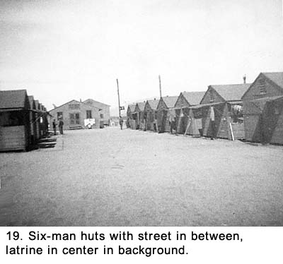 With no furniture but the cots, we used our duffel bags as dressers. Radios, pictures, or anything else of a personal nature could not be exhibited. The huts reminded me of little fishing shacks I had once seen on a frozen lake. It was obvious all structures in the camp, from the latrine and dining room to the shacks where we slept, were geared toward functionality. Anything that could even remotely be construed as a luxury was not a consideration. All the men who arrived by train were assigned to the 815th Anti-Aircraft Artillery (AAA), Automatic Weapons (AW) Battalion. The Battalion was further classified as being Semi Mobile (SM). That meant the guns were towed by trucks instead of being self-propelled. The main weapons of our unit were 40mm guns that could fire two rounds per second on automatic, or be set to fire single shots. We would spend many hours learning how to operate and maintain them. The camp also had a large number of 90mm gun Battalions and one with 120mm guns. We were impressed with the size of our guns until we saw those larger ones. Being around guns was to be a new experience for me, and it was all very interesting. I would later be assigned to Battery D (called Dog Battery), First Platoon, and Gun Section Number 1. In addition to myself, fourteen men were designated for this gun section. They were Bud Dillon, R. Williams, "Red" Wilson, Jim Grimes, Glenn Le Claire, Joe Bernal, Bob Armbruster, R. Stevens, Jim Crow, J. Hughes, Vern Bapst, Jack Thomas, Mel Spearing and Wellington. No stripes were passed out until later in our training. We were all buck privates to start. My Battery-D was billeted in two rows of ten huts with a gravel-covered open space approximately fifty feet wide between them. We referred to this open area as "the street," although there was no vehicular traffic on it. It was there that we lined up whenever we were called out to formation. At one end of each street was a large building containing the latrine with toilets, washbasins, and showers. Inside, the row of toilets was located right across from the line of washbasins with no partitions or doors anywhere. The shower room had a concrete floor and spigots protruded from three of the walls. If anyone expected or desired privacy, the latrine was not the place for it. In the morning, there was a mad scramble to get shaved, showered, and use the toilets in time to be ready for roll call. With everyone scurrying about, it always amazed me to see several men shaving with straight razors as others jostled about them. At the other end of the street, there was a mess hall and another building that was used partly as a supply room and partly as a day room-a classroom during working hours and a recreation room off-hours (See Fig. 20). Recreation facilities consisted of one ping-pong-table and several smaller tables with chairs for writing letters. The day room had no radios, newspapers, magazines, deck of cards, or anything else. 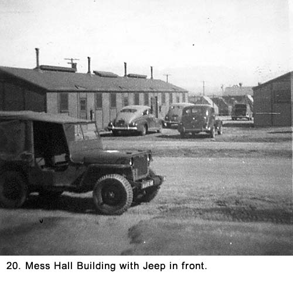 The first full day in camp, we lined up at the supply room. Six of us entered the building at a time and stood before a counter to be served. We called out our sizes to several men behind the counter who then headed back into the storage room to select material from stacks of bins. Those who knew their sized fared better than those who didn't. A soldier standing next to me had no idea what size he needed except for his shoes. The supply corporal, who was waiting on him looked over the counter, sized him up by eye, went back to the bins and returned with new clothing. "Try these on! If they don't fit, we'll call in the tailor," he said with a laugh, because there was no tailor. There were no chairs available so the soldier sat on the floor while he pulled on his pants. When he stood up the supply person said, "Close enough. Next!" We were given bedding, another fatigue uniform, an additional dress uniform, mess kit with cup, gas mask, steel helmet, helmet liner, duffel bag, raincoat, some underwear, and other miscellaneous items. We had been given some things at Camp Grant, but this time we filled out what the army deemed to be our needs. When we finally had our bedding and clothing stacked on the counter, we picked them up and moved out of the supply room. One soldier could not refrain from giving the supply personnel a parting wise remark. "You forgot the white sheets," he said sarcastically. The supply sergeant responded, "We're saving them for your hospital bed when some Jap shoots your ass off." We returned to our huts and made our cots in the army's prescribed method with square corners and taut blankets. All clothing we were not wearing was stowed in our individual duffel bags. We were issued shoulder sleeve insignias (patches) with "AA" letters embossed on them designating us as members of an antiaircraft battalion. We immediately sewed them onto the left sleeve of our dress uniforms. Each of us had been issued a small cloth bag containing needles and thread to do our own sewing. Stenciled on the bag was an American eagle and the not very military sounding name of "Army Housewife" (See Fig. 21a).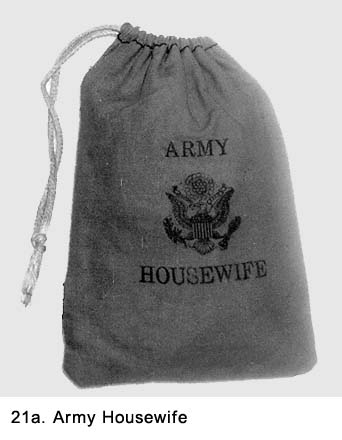 Another important item we were issued a little later was the Garand M-1 rifle that would become an integral part of our life in the Army. It would seldom be more than a few feet away from us. We were not yet issued ammunition. We cleaned the rifles by removing the heavy layer of grease that the army called "Cosmoline" from the metal parts with gasoline. Then we gave them a thin coating of oil. The wooden stocks were coated with linseed oil and then buffed with a cloth until they shone. Even though we had been in the Army for only a short period of time, we continued to strive to get rid of that "new recruit" look. One of the items that made us look that way was our new steel helmet. We had noticed that the helmets worn by the old timers were heavily scuffed and most of the textured paint was worn smooth. The rims were usually worn down to bare metal. So, one of the first things we did was find a concrete surface and bang our helmets on it. After wearing ourselves out from the pounding, we decided the paint job was more durable than we thought and it would take many years to get that used look. Later, we found out helmets issued some years earlier had different and less permanent paint than ours. We never came close to matching their worn down look, and, as time went on, we could not have cared less. We reached the stage where we were fully-equipped with clothes and gear. It was now time to get down to training so we could be drilled into soldiers. It started out being as bad as we expected, and it didn't get much better with time. Meeting Our New Officers and Noncoms We were called out of our huts and told to line up in formation to meet the non-commissioned officers who would give us our basic training. They were "regular Army" or "30-year men" (thirty years of service in order to retire at full pension) who were planning on making a career of the Army. Their average age was considerably higher than the young recruits like myself, and they had been in the service for a good number of years. It took us about fifteen minutes of exposure to them to determine a more loathsome lot would be hard to find. They wore brown wide-brimmed corded campaign hats with a pointed top complete with indentations (like the hats of Canadian Mounted Police). The rest of their uniforms were similar to ours with some notable exceptions. Theirs did not shine like ours and certain outfits, like their denim fatigues, were a more faded blue, indicating they were more seasoned soldiers. Something as unimportant as the difference in the color of their uniform was important to them and the envy of us. They were exceedingly proud of the fact their fatigues were all one piece while ours consisted of a separate blouse and pants. Also, their uniforms were spruced up with the all important noncommissioned officers stripes. When they wore their dress uniforms, there were usually a couple rows of campaign ribbons showing on the left side of their chests. At the beginning of our training, we were too green to know what they stood for. They made it clear to us they disliked us draftees because we were not "real soldiers" like they were. They looked on us with contempt. On the first day we met them, we were informed their job was to whip us into soldiers of "their caliber." After we got to know them better, that objective of being of "their caliber" sent shudders down our spines. Being made into well-trained soldiers was one thing, but picking up any of the habits relating to how these guys talked and behaved on a social plane was something else. They had the moral fiber of snakes, and there was no amount of indoctrination that could bring us down to that level. For example, it seemed that it was impossible for them to complete a sentence without peppering it with obscenities-not just swear words but overly vile language. They expounded a constant stream of obscene taunts and foul epithets at us. Their grammar in general would have made an English teacher cringe. We were learning one of the axioms of life: the amount of swearing someone does is usually inversely proportionate to the amount of education he has. I had just come from working in the steel mills, which is not exactly a training ground for altar boys, but nothing prepared me or any of the others for these guys. The first sergeant was named Monteleone, and he was exceptionally vile. He referred to us singularly or en masse only as "you f---ing people." In some outfits, this rank is known as Top Sergeant, Top Kick or just Top, but in ours Monteleone was plain Sergeant to his face and anything derogatory we could think of behind his back. As bad as he was, there were a couple staff sergeants who gave him a run for his money at seeing who could be the most obscene. They not only swore constantly, but they insisted on telling us filthy stories, jokes, and reminiscences of their sexual conquests. I had heard dirty jokes and stories before this time but nothing like theirs. They were so crude they weren't even funny. One of the sergeants looked like he was continually hung over. The day after he returned from a pass, he would always tell us proudly "I got so drunk, I couldn't find my ass with both hands. I don't even remember where I was or what I did." Some of the men would laugh obligingly while others stood there in disbelief. Bapst, one of my new friends, always referred to him as "Sergeant Lush." This does not imply the rest of us were angels. We all swore more in the Army than we did in civilian life, but compared to our new first sergeant and those "cadre members," as they liked to be called, we were babes in the woods. Where did these sergeants come from, I wondered? Were they the product of spending too much time in the Army? I hoped I would never find out. We had four officers in our battery: Captain Mc Kee and Lieutenants Kraft, Engler (who came later in our training), and Harrison. We thought Engler was a pretty good guy, while we were neutral on the other two lieutenants until we got overseas, when things would change. From the very first day we were exposed to him, we drew the conclusion Captain McKee was a combination of a joke and a tragedy, all at the same time. He was about five feet four inches tall, and weighed about one hundred ten pounds. His uniform always looked like he had selected the smallest size available, but even then it was a size or two too big for him. It hung on him like a big brother hand-me-down. But it wasn't what he wore or how he looked that bothered us. It was what he said and did. We found out he had been an appliance salesman at the Boston Store in Milwaukee, Wisconsin, before the war and had risen in the military ranks through time spent in the National Guard. He walked-no strutted-around with a swagger stick under his arm, taking it out frequently to hold in his right hand and tap the open palm of his left hand. There was little effort on his part to hide his feeling of superiority over enlisted men. He lectured us constantly about how "the enlisted men should treat the officers with great respect." I had been taught respect is something that is earned, but here, it was being mandated. Mc Kee was very animated, but his theatrics were missing something. He was like a bad actor in a complex play, and like an audience, we were both embarrassed for him and disgusted at the same time. He instructed us daily on how to recognize the line that should never be crossed between the officers and enlisted men. What power he had over the enlisted men, and, oh, how he loved to use it, even on the most mundane issues. One example of this was his method of saluting. The procedure was for the enlisted man to salute the officer and hold the salute until the officer returned it. Most officers gave a quick and snappy response, but not McKee. He made sure the interval between the two salutes lasted as long as possible. It clearly conveyed the message: "I'll salute when I'm good and ready to do so and you can just sweat it out until I do." What vainglory! Most commanding officers passed instructions about military courtesy to the enlisted men down through the ranks from their sub officers to the first sergeants and then to the men. But, Mc Kee enjoyed dispensing his version of these rules on a first-hand basis. While he had us in formation at attention, he would give rambling discourses about how he had stopped some enlisted man or men in or out of the camp for their infringement on military discipline. For example, he told the story about a GI who had stopped in a Jeep, given him a salute, and then asked for directions. He was "outraged" that the GI had not stepped out of the Jeep before approaching him. Some of the things Mc Kee said were really off the wall. One day while he had us together in formation, he asked, "Do any of you men use a washcloth while showering or an umbrella when it is raining?" He asked for hands, and many of us put ours up. By this time we were already sick of his nutty stories. We knew where he was going with this poll and, despite the fact we did not use those appliances, we wanted to be on the losing side just to get a rise out of him. He said: "I wish that I could get all of you with your hands up transferred out of his outfit because real men don't use washcloths or umbrellas." That little pipsqueak wouldn't know a good man if he saw one, and what in the world do umbrellas and washcloths have to do with soldiering? In reality, I doubt if there was a washcloth or umbrella in the whole camp, and if he was talking about civilian life, the question sounded even more bizarre. We were all hoping that he really meant it about the transfers because we would have taken him up on it in a minute. Another time, he made a big thing about how some enlisted men had "had the nerve" to move into the officers' seating section at the camp's movie theater. We were told later by men who had been there that the enlisted men's section had been full and there were several rows in the back of the officer's section that were not being used. "They won't do that again," Mc Kee stated with ferocity usually reserved for something really meaningful. We did not know what disciplinary action he took with the culprits, but we could imagine from his raving he would have liked to lock them up in the camp brig. We felt his overbearing reaction to insignificant things was the result of his lack of confidence because of his size and a cover for his incompetence. After being dismissed from a formation where we had to listen to one of these tirades by Mc Kee, one GI commented "If he puts his hand inside the front of his blouse, you can bet that that little bastard is Napoleon in reincarnation." Most of the enlisted men referred to Mc Kee behind his back as "ole bandy legs." I don't remember him having bowed legs, and I didn't think that the nickname was befitting. I thought it was too kind. As it turned out, when we got overseas, the only time we saw Captain Mc Kee was in convoys. He never came out to our gun positions. I guess he was too busy with paperwork back at headquarters. Our only revenge to his continuous put-downs, and it was a weak revenge, was to talk about him in private, which we did constantly but anything bad we could say about him would let him off too easily. What a jerk he was! We had all expected to be subjected to the military discipline of the army and to respect rank, but Mc Kee had a nasty way of rubbing our noses in it. We started to pick up and use one of the Army's most popular clichés: "How do we get out of this chicken s--- outfit?" Both Mc Kee and Monteleone were the constant subjects of our conversations. None of it was favorable. What really surprised us about them came when we learned over time they were antagonists. The first inkling came when we heard from men who lived in the huts near the orderly room that they had many arguments. We also picked up some unusual exchanges between them when they had us in formation. We learned Mc Kee felt Monteleone's abrasive and uncouth manner was not good military practice. While he respected his complete control over us, he did not like the vulgar manner he used continuously. Monteleone disliked Mc Kee primarily because Monteleone did not like anybody. He thought Mc Kee was a weekend warrior who had received his rank through the National Guard instead of coming up through the ranks in the regular Army. Monteleone had been overheard at the PX one evening when he had his fill of beer saying, "I know more about running a battery than that f---ing excuse for a captain ever will." There was a noticeable hostility between them that even we of the lowest rank could detect. The way they spoke to each other, the looks of contempt, and the overreaction to Mc Kee's commands by Monteleone were all too obvious. An example of this animosity was highlighted one day after our normal duties were completed. Mc Kee ordered Monteleone to take us to the parade ground to do some close order drilling and calisthenics as punishment for some infraction we had done during the day's routine. While Monteleone was never shy about giving us extra duty, this day he wanted to do something else and he said so to Mc Kee. Mc Kee replied that he wanted him "personally" to take this assignment as he saw an opportunity to do two things, punish the troops, and show his authority over Monteleone. As soon as we left the battery area, we were put into "route step." This was unusual for Monteleone, who liked to keep us marching in cadence so he could shout at those whom he thought were not doing it properly. We knew something was up. When we got to the drill field, we expected to be given a real workout. Instead, Monteleone put us at ease and proceeded to waste time talking to one of his cadre members. After about half an hour, he stepped out in front of us again and announced that we were now going to start calisthenics. "Here it comes!" announced someone softly from the rear of the ranks. We were all expecting the worst. Monteleone then announced, "I want every man to extend his right arm straight out. Now in cadence bring your index finger out on the count of one and in on the count of two. One, two - one two, etc. This exercise is to strengthen your trigger finger so you will be better riflemen." We were shocked to say the least. Some men laughed, but Monteleone did not smile and the happy faces turned sour. After about five minutes of this ridiculous maneuver, we were marched back to our huts. As we neared the area, Monteleone brought us to attention, raised his voice a few notches, and barked the marching orders with new vigor. He was trying to convey the message to Mc Kee or any other officers still in the area that he had really taken these troops out for a real workout. When we were dismissed, there were a lot of mystified soldiers. We later concluded the thing that made Monteleone happiest was to show the troops he was not completely subjugated to Mc Kee. The other officers in our battery, like all officers, had been well-indoctrinated with the caste system of the Army that set out the vast difference between the officers and enlisted men. There was no crossing over the line between the two groups. Their authoritarian attitude left no doubt they were part of a suppressive command that was to dominate the enlisted men. They would occasionally engage us in small talk, but they seldom acted like they had their hearts in it. They always gave us the impression that, yes, they knew how to be sociable, but we shouldn't forget they still gave the orders and we obeyed them. In hindsight, some of their attitude may have had to do with the person directly over them in command. They had to follow the directions and please an eccentric captain, and they had to associate with him much more closely than we did. For our part, the enlisted men met any fraternizing by the officers with smiles of ready acceptance even though those, too, were not completely earnest. We would become so firmly indoctrinated in military discipline we felt we had to respond to authority, even to what could be construed as phony social acceptance by this authority, with a favorable reception. We knew it was not an earnest attempt on their part to develop any kind of friendship, but we accepted any pleasantness as relief from the almost constant barrage of orders they put upon us. We, too, were playing at the game of pretense, and the smiles were mainly phony on both sides. While we appeared to be engrossed in their every word, our thoughts during these short sessions-and they usually were short-were ones of apathy while our faces shone with approval. Anything we could do to take some pressure off of us was worth doing a little acting. We knew there was not going to be any kind of a lasting relationship to come out of this because their officer's code forbade them from socializing with us in off hours. There would be no three-day passes together or even a glass of beer while sitting side by side at a bar in the nearby town. And, so, the bridge between enlisted men and officers was being built on a fallacious foundation that resulted in a strained relationship between the two groups the entire time we were together in the service. While we were critical of the officers, we were also jealous of them; of the privileges they enjoyed, the prestige involved, even the pay they received. We were jealous of their dress uniforms with the hand-tailored jackets, gray-pink pants, brass buttons, and, most important, those metal symbols of power attached to their collars or set at the outer reaches of their shoulders. In our periods of fanaticizing, we would gladly have changed places with them. When the officers or cadre members gave us orders it was like a judge handing down a sentence to a criminal, except there was no appeal process. Any attempt to plead our cases or to even comment on them produced a harsh reprimand. There was no excuse good enough for not obeying a command instantly, no matter how implausible it might be. We were threatened with dire consequences for "getting out of line." Penalties were swift and usually were overkill for the infringement. The punishments would lead to extra KP duty, cleaning the latrine, extra guard duty, walking around the battalion area for hours wearing a full field pack, or being restricted to the barracks. Later in our training, we would be threatened with how more serious violations of something called The Articles of War would lead to further discipline. The articles would include the phrases "court-martial," "dishonorable discharge," "imprisonment," or even "death by firing squad." It would be shock treatment at its worst and would knock any semblance of resistance still remaining completely out of us. We had all experienced discipline from our parents, teachers, and employers before entering the service but nothing like this. We were now subject to complete mind control with the requirement of immediate reaction to commands and total subjugation to authority. In many cases, it appeared they were more interested in degrading us than in teaching us anything about military discipline. The aim of the discipline was to break our wills to resist and to think on our own. To a great degree they succeeded. All but a few of us soon learned to keep our mouths closed and follow orders, even when they drove us beyond our normal physical endurance or made no sense to us at all. We had to obey. We had to accept their ways, and we could not question. But, in the back of our minds, we knew we were civilians at heart, and we would only have to endure these inequities for a given length of time. The war would not last forever, and we would eventually be free of this caste system. Many years after the war, a movie came out that included a great line which really condensed the feelings we had as enlisted men in the United States Army. It stated, "The Army is in the business of defending democracy, not practicing it."1 A few men still had minds of their own even after our training period resulted in the rest of us being beaten into subjective sheep. They regularly challenged the high-ranking noncoms and tested the officers' decision-making process. Then those in charge decided on one of two alternatives. Was the violation serious enough for a court martial or should it be met with some kind of severe penalty right there in the battery? While the rest of us often griped about our conditions, we avoided confrontation authority figures. The first two months after we arrived in camp were considered basic training. During that time, they kept us busy six days a week from sun up to sun down. Then there was a gradual reduction until our schedule was changed to five and a half days a week, with the evening meal signaling the end of the day Monday through Friday and the parade on Saturday. However, that did not mean all duties stopped for everybody at those times. There were often special assignments like KP, guard duty, penalty duties, and night operations thrown in to keep us on edge. While there was no typical day at Camp Haan, every day started the same at 0600. Sergeant Monteleone awakened us for first call as he walked down the street between the huts with his mouth spewing one-liners like an open sewer. "Out of those fart sacks, you f---ing people!" "Drop your c---s and grab your socks!" "Strike those tents!" "Off your a-- and on your feet." On the way back to the orderly room, he would stop at certain huts, bang the screen doors open and shut a few times as loudly as he could, and shout at anyone still in bed, with all his shouts peppered with obscenities and dirty expressions only he thought clever. The first thing we did was to pull on our shoes and fatigue pants. We grabbed our shaving gear and hurried down to the latrine in hopes of beating some of the crowd. There, we shaved, washed, showered, and used the toilet facilities. Returning to our huts, we finished dressing, made our bed, and straightened up the huts. As part of dressing, we had to lace up our cloth leggings. At 0630, one of the staff sergeants would come down the street continually yelling, "Fall out!" to get us out of our huts and into formation for roll call. Monteleone would be standing out in the street facing the place we were to line up in formation. He would be shouting at a constant cadence, "Fall in! Fall in!" We would mumble to ourselves, "OK, which is it, fall in or fall out?" We lined up in two groups with each representing a platoon. Each group had four rows, each row being a fifteen-man gun section. We stood there in our prescribed location but not at attention. When everyone was in place, Monteleone, who was still standing facing us, would shout, "Atteeen hut!" and we would all snap to attention. There were more shouts of "Straighten those lines!" and "Get that straggler's name." (a euphemism for, "Make sure that guy gets extra KP duty!") He then yelled, "Call the roll!" Roll call consisted of each of us responding "Here!" in a voice that was loud enough to be heard a block away when our name was called. The section leader took roll call for each gun section, and they in turn reported to the platoon sergeant. The two platoon sergeants would then take turns shouting to the first sergeant, "All present and accounted for!" After both platoons responded, Monteleone would do a 180 degree pivot, salute, and give his report to the Officer of the Day who had come out of the orderly room during roll call and had been standing behind him. Monteleone would then turn back to us, expound a couple of obscenity-laced threats, then yell, "Dismissed!" And so, our day would start with the melodious voice of the little dictator ringing in our ears. Then it was back to the huts and wait for breakfast to be served. About fifteen minutes after being dismissed from formation, one of the cooks would stick his head out of the mess hall and shout, "Chow call!" at the top of his voice, and we would head to the mess hall to stand in line before entering. If you were really hungry, you lined up before the call so you would be near the front. There were three full meals a day that most of us looked forward to with great anticipation. Army food was high in starch and everyone, including me, put on weight despite the great amount of physical activity we were doing. When we entered the mess hall, we picked up plates and silverware. The food was spooned out of large cooking pans by the cooks who filled our plates as we passed them. We then sat at wooden picnic tables to eat. We always picked a buddy or two to sit with during the meal. The person in charge of the mess hall was Staff Sergeant Frank Emerling. In civilian life, he had been a chef at a major hotel in Los Angeles. He was really good at his trade, and when he was around we ate well-prepared food. However, Emerling had one propensity, which turned out to be a detriment to us as well as to himself. He hated the Army with such a passion that he would go AWOL a lot and be punished with the loss of his stripes. No matter who took his place, the quality of the food would deteriorate badly. It was amazing to see the change in the quality of meals we got, even though the rations going into the kitchen remained about the same. For example, without Emerling on duty, beef would be served only as hamburger or stew meat and the desert would go from homemade sheet cake with chocolate frosting to fruit cocktail out of a can. It did not take long for the officers, who ate with us but at separate tables, to tire of the second-rate food, and Emerling would be back in charge of the kitchens with his staff sergeant rank restored. That sequence happened three times in the course of our training and then again when we were overseas. We kidded him about having zippers on his stripes to make them easy to remove and put back on again. After finishing our first meal of the day, we picked up our dishes, scraped them into garbage cans, and stacked them for the KPs to wash later. We then went back to the huts or to the latrine for last-minute cleanup. At 0715, to the sergeant's command of "Fall out," we lined up in formation out in the street again. Every morning, at this first formation after breakfast, anyone who was sick or felt something was wrong with him would be told to assemble in front of the battery office, called the Orderly Room. Their names would be entered in the sick book. Later, these men would be marched to the dispensary to be inspected by a doctor or a medic. The procedure was referred to as sick call. Out of the five or six guys who reported being sick, several would be there almost every day. Their malady usually consisted of something not readily discernible to the medics. A common one was, "I have this awful pain in my back." They knew back pain were hard to detect and even harder to treat, so they could come back tomorrow with the same ailment. These men were known as the goof-offs of the outfit who would do anything to get out of a day's work. I don't remember anyone in our gun crew ever going on sick call because we were all in the best physical condition we had ever been in. Also, there were some horror stories going around about the dispensing of medicines by medics who flunked out of medical school. They were probably rumors started by the sergeants to discourage us from going there. Anyone who worked in the dispensary, regardless of rank, was called a pill pusher. Following sick call, we did calisthenics, which usually took about half an hour. The sergeant would spread us out in the formation by calling us to attention, ordering "right shoulder arms," and then putting us at ease again. The workout usually consisted of arm exercises, deep knee bends, jumping jacks, and push-ups. Occasionally, the sergeant in charge would get lazy and limit the calisthenics to stretching. After they were done, we had to police the area. We lined up across one end of our campsite and then walked through the area in one straight line, picking up everything that did not belong there. The sergeants would be behind us to point out anything we missed. They even had a vulgar expression to "encourage" us to bend over and pick up everything. "I want to see nothing but a-- holes and elbows." We soon became use to their immorality so any shock value began to lose its effect. "Don't all high-ranking sergeants talk like that?" we asked ourselves. Getting Down To Basics At 0800, the workday would begin. The first thing they taught us in our training was how to salute, march in formation, and to do close order drill. We marched all over camp doing many different maneuvers. The drill sergeant, who was usually one of the cadre members, would be shouting out in cadence; "Hut, …, hut, …, hut, two, three, four, hut, hut, … by the right flank …march, by the left flank …march, to the rear march, column left …march, column right …march, detail … halt …parade rest." Then there were other comments they would give during the marching like, "Close it up!" "Straighten those lines!" "Get the lead out!" "What's the matter with you!" "Pick up your ass!" and "You look like a bunch of old ladies!" The command we hated the most was, "Double time …march!" which consisted of going from a marching cadence to running in a faster one. Usually, a sergeant would take us out on the streets, march us around for an hour or so and then double time us back to the battery area. We began to hear these commands and comments in our sleep. We
were taught exactly how and what to wear for what they called, the uniform
of the day. It was one of three types: fatigues, khakis, or dress ODs (See
Figs. 21b, 22, 23a, 23b,and 23c). We wore fatigues during the day except
on Saturdays when we paraded. In the evening and on Sundays, we wore our
khakis or the olive drab dress uniform, depending on the weather. The
dress code made everyone looked exactly the same at any given time. There
was no room for individuality.
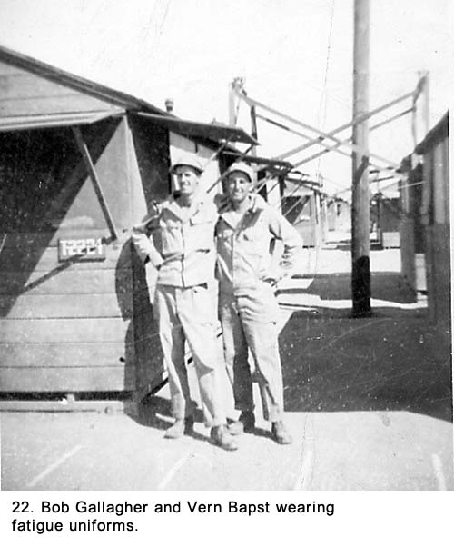
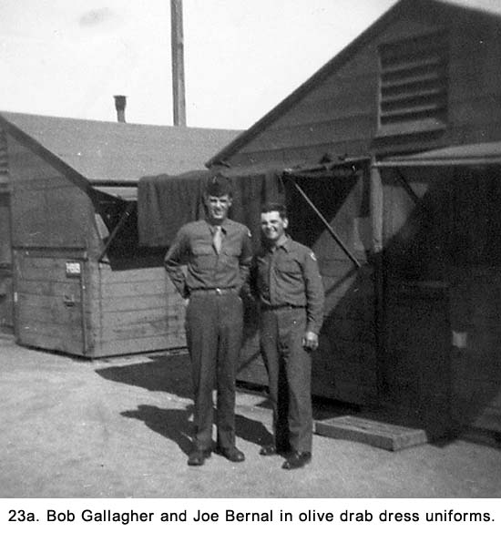
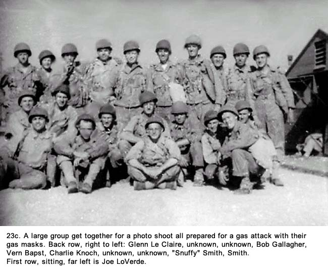 There was no mixing of uniforms and any deviation would result in a shout from some sergeant, "You're out of uniform, soldier." Whenever they called you "soldier," you knew you were somehow out of line. Every piece of clothing had to be done up as described in some Army manual. Certain buttons were to be buttoned while others were not, the pants were to be tucked into and bloused over the leggings in a prescribed manner, the ties on our dress uniforms were to be tied with a single loop and folded into the shirts between two specific buttons, and the list went on. Even the overseas caps that went with our dress uniforms had to sit on our heads in a prescribed location. They were to be cocked to the right, and the front end set one-inch above the right eyebrow. These hats had a red cord piped around the top edge designating artillery. The cadre members had a profane name for this article of clothing that is too vulgar to repeat. For everything we did, there was the right way, the wrong way, and the Army way. Only the Army way counted. We were taught when to and how to speak to officers and noncoms. We were even instructed on how to strip and dispose of the butts from cigarettes: to open the paper, scatter the tobacco, roll the paper into a tiny ball, then throw it on the ground. Every day we spent a lot of time on aircraft identification. If we were going to shoot down aircraft, we had better know the enemy from our own. Because no one knew at the time where they would be sent to following our training, we had to study planes from both the European and Pacific theaters of operation. There were American, British, Canadian, German, Japanese, Italian, and Russian planes, both fighters and bombers. We used movies, flash cards (See Fig. 24) and models to learn the characteristics of all the warplanes being used at that time. 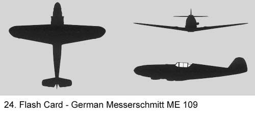 Despite the constant drill on this subject, some men never seemed to become proficient in identifying planes. They could not even distinguish between a fighter and a bomber. That bothered me but nothing was ever done about it other than to repeat the identification drills over and over again. I became convinced this lack of knowledge could cause serious problems if we got into a combat situation. Would there be time to take a vote if we were attacked? Was I the only one worried about this? Because I had been studying planes since I was in grammar school, I stood out in this area. I soon became the one who did the testing and grading of the other soldiers in our outfit. At 1200 hours, we were back at the mess hall for lunch or what the Army called dinner. It would be the main meal of the day. Then, it was back into formation where we were marched off to continue our training. We went to the gun park where we fieldstripped the 40mm guns to determine how they operated and learned the official names of the many parts. There was a drill to see how fast we could lower the gun from its traveling position to a firing position and then a reverse of that procedure. (See Figs. 25a and 25b) We took the breechblock out so many times it all became very routine. More about the 40mm and some of our other equipment was taught with lectures and movies back in the day room. Manuals were studied and we were tested on how well we memorized the nomenclature of major items. 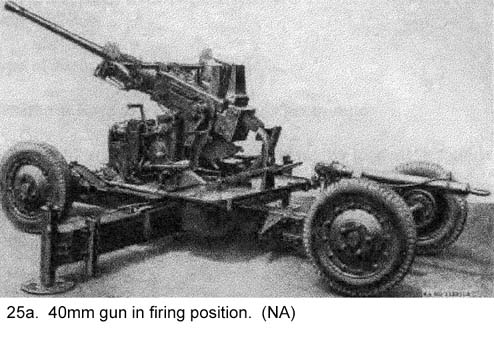 As a Battalion, we were taken to the camp's obstacle course where we jumped over wooden fences, swung by ropes over ditches, crawled through pipe, and climbed knotted ropes. There was always some kind of a mythical record we were trying to break as a battalion which was to spur us on to be faster and better than other battalions. While the sergeants tried to transfer their enthusiasm for breaking the record to us recruits, we somehow never got that excited about it. To us it was just a lot of hard work and our main goal was to get it over with as soon as possible with the least amount of pain. 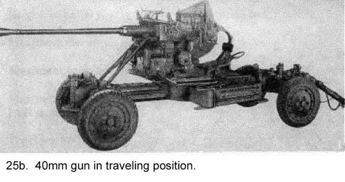 A lot of time was spent learning about the M-l .30 caliber Garand rifles we had been issued. They taught us how to carry it in formations, field strip it, put it back together, and maintain it. We even had to disassemble and assemble it blindfolded. The gun could be loaded with a clip with eight rounds, and it fired semi-automatic. That meant you had to pull the trigger for each shot. We learned something called the manual of arms, which is the rigid movement of the rifle to different positions while we were in formation. It included saluting, carrying, moving it to a shoulder position and back to the ground among other movements. There was no ammunition issued for the rifles until later when we had target practice. We were issued bayonets and learned how to attach them to the rifle and use them as weapons. There were classes in jabbing with the bayonets, hitting with the butt of the rifle, and other ways of inflicting bodily injury to the enemy. The training was intended to create a martial attitude that would make us more ferocious warriors. We moved through the drills with intensity, but somehow it did not make a lot of sense to most of us. In our view, the chances of an antiaircraft crewman having to fight the enemy hand-to-hand seemed quite remote. There was no effort made to sharpen our bayonets and no thought given to them after the drill. They went back in their scabbards where they remained for the balance of the war and, like the gas masks, became just another piece of equipment added to the load we carried everywhere we went. Later, the bayonet's main function would turn out to be as a tool for opening wooden cartons and ration cans. Most of us believed if you got close enough to the enemy to use a bayonet, shoot him instead. Learning to use gas masks was one of the most disliked chapters of our training. We were sent into a building and all doors and windows were closed. Then, they set off tear gas bombs while our masks were still in their carrying pouches. After the discharge, we had to hold our breath, open the gas mask container, put the mask on, and clear the mask to avoid being affected by the gas. Not everyone was successful, and there were some violent reactions from those who had not done it in time. One fellow in our unit had a temporary breakdown from his experience and had to be sent to the hospital for several days. We carried these gas masks every day we were training and when we got overseas. It was a real pain in the neck lugging them around, and we soon learned to hate them. What we were not told, but should have been, was the reason for the emphasis on everyone carrying a gas mask at all times, at least in a combat zone.
This information would have made carrying the masks a lot easier to tolerate. However, the Army was not out to offer us justifications for what they were doing, only to set rules and force us to obey them. There were lectures and films in the day room. The films were primarily about our equipment, aircraft identification, military procedures, health, and military discipline. The films always seemed to come on the hottest days, and we were shut in the day room with all of the windows closed so the shades could be pulled to darken the room. There was no problem keeping our attention, despite the hot and stuffy room, because the sergeants were right there to make sure we stayed awake. One series of films I enjoyed, Why We Fight3, was produced by one of Hollywood's best directors of that time, Frank Capra. It was intended to be an indoctrination film for new recruits, and it was American propaganda at its best. It was a powerful documentation of recent history and presented convincing evidence why we were fighting a just war. The films depicted the United States as a diversified nation with lofty ideals joining together with the Allied Nations to engage the dictatorial tyrants of the Axis countries. There were seven one-hour series and we would be shown a new chapter about once a month. The first three - Prelude to War, The Nazis Strike, and Divide and Conquer - showed the rise of the totalitarian governments, Germany, Italy and Japan, and their ruthless conquering and oppression of neutral countries. It was exciting entertainment and a great improvement over most of the dull training films we were exposed to. The next three chapters - Battle of Britain, The Battle of Russia, and The Battle of China - depicted the Allied powers making progress as the Axis countries began to go on the defense. The final chapter - War Comes to America- was more political and purely propaganda oriented, showing the folly of having our country follow an isolation policy like we did after World War I, which the film partially blames for causing World War II. There were many emotional and exciting episodes in these series. Some of the best footage was taken from Nazi films captured by the Allied Army. There was one scene in this vein that really stuck in my mind for a long period of time. It showed Hitler, Goering and other high-ranking German officials standing around a large wooden table covered with maps celebrating the surrender of France. Hitler and Goering were bouncing around the room like a couple of kids in a candy store while Goering was wringing his hands gleefully. If it wasn't such a serious matter, the scene could be part of a Hollywood comedy with grown men acting like children. I looked forward to each successive chapter of that series and I learned a lot about history, propaganda tainted or not. To me the series was entertainment, because it was a relief from our daily grind. I already knew Hitler and his like were the enemy, so the main purpose of the films in motivating me to go charging out and get him was lost somewhere. We were also shown sex hygiene films about what happened if we contracted a social disease. The films were really gross, and for the most part they scared the majority of us into behaving ourselves. I glanced around the room during one very graphic scene and about half of the men in the room were grimacing. The threat of a court martial for anyone who contracted a disease also loomed over our heads. To make sure we had not contracted one of these diseases, they regularly gave us a physical inspection. About once a month, they would have us all fall out into formation in front of our huts wearing a raincoat, shoes, a helmet liner and nothing else. The raincoats were rubberized, guaranteeing we would be sweating profusely after a short period of time from the heat of the California sun. We would then be marched over to the medics building, lined up and, with our raincoats opened, our genitals inspected by a medic sitting on a chair in front of us. He would look for social diseases, crabs, or something worse. It was known as short arm inspection. According to army regulations, once a month we were to be read the Articles of War, the Army's criminal code governing our actions while in service. We referred to them as the commandments, only these rules left no room for contrition, only punishment. Any infringement of these laws could lead to a court-martial with the resulting penalties. For example, they stated we could not be absent without authorized leave (AWOL), desert, fail to obey an order, be drunk on duty, show disrespect for a commissioned officer, disobey a noncommissioned officer and so on. We always got a kick out of the last Article. It stated, in effect, if your conduct was of a nature to bring disrespect upon the Army, you could be subject to a court-martial. This meant anything you did not to the Army's liking could be included in their list of crimes. It was a catchall if I ever heard one, and I wondered why they bothered to be so specific about some infringements when this one covered them all. Those in charge of our training would throw out the threat of court-martial on a regular basis. It was presented in such a forceful manner the mere thought sent fear through us. There could be the court-martial itself, maybe a dishonorable discharge, and even time in jail. While much of their blustering was little more than threats, we did not know that at the time, and if we did, we did not want to take the chance of being made an example. If they treated any minor infringement with major punishments, surely they would follow through with the threats associated with more serious items outlined in the Articles of War. Most soldiers like me lived under the threat of court-martial and we went to great pains to avoid one. There were many hikes that took us out of camp. The army called them forced marches. We wondered why they used the word forced to describe these activities. Everything we did was forced on us, so why limit it to marches? We carried a full field pack on a few of them, but on most we just wore our fatigues with gun belts, helmet liners, and gas masks and carried our rifles. Some hikes were as short as five miles; others were as long as twenty-five miles. On the longer hikes, we would get a ten-minute break every hour to sit down on the ground and rest. The sergeant in charge would shout out, "Take a ten-minute break, smoke if you've got em." Most of the fellows smoked. After the ten minutes were up, the sergeant would yell out, "Okay, men, on you feet, stow those butts, and move it out," and we would be off again as men field stripped their cigarettes. The longer hikes really tested our endurance. Just like they did at the obstacle course, they would pit one battery against another, platoon against platoon, and even gun section against gun section. It was a contest who would finish first, who would finish in the least amount of time, and who would have the most men finish the longer hikes. Like the contests at the obstacle course, winning was a lot more important to the officers and noncoms than it was to the rest of us. The younger men would usually take over carrying the rifles of the older ones in order to lighten their load in hopes they could stay the course and finish the hike. A Jeep or a weapons carrier followed the hikers and picked up stragglers who could not finish. The sergeants tried to make those who fell out feel as guilty as possible for letting down their unit. Sometimes, while marching around on the streets in the camp, we would come across Italian prisoners of war doing labor work. They had been captured by the American Army in the battle for North Africa and incarcerated in an area located in the far corner of Camp Haan. The men of Italian descent in our outfit would greet the prisoners with the well-known stiff-arm salute: They grabbed the inside of their right forearm with the left hand and then propelled both arms up in the air. It was always followed with some kind of an oath in Italian only they understood. Even though the rest of us did not know the meaning of what was said, just listening to the emphasis put on certain words and watching the body language produced a lot of laughs from our ranks while the prisoners just smiled without a response. We bivouacked in open fields outside Camp Haan for several days. There we were introduced to pup tent living (See Fig. 26). The first night out it rained, which was rare for southern California, and we soon learned how to dig small drainage ditches around the tent to avoid getting flooded out. At first we found it all quite exciting, but later we would learn to dislike it because of their cramped quarters.. Our meals were delivered by truck and we ate out of mess kits for the first time. 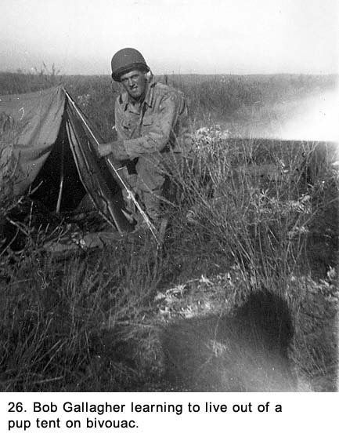 Back at Camp Haan, we grumbled among ourselves about the rigorous training, never realizing that it was going to get much worse. Our complaining was somewhat tempered by the fact that there were branches of the Army which were a lot harder and potentially more dangerous than an anti-aircraft outfit. Nobody expected military life to be fun, and, realistically, it was just what we anticipated it to be: hard, miserable, and demeaning. There was little talk about when the war is over because the way military operations were going overseas, we knew that the end was a long way down the road. On a regular basis, we were taken over to the camp's infirmary and given tetanus, typhoid, and smallpox shots. While standing in line to be shot, there were always men who would exaggerate about what was going to happen. "Watch out for the square needles." Someone coming out of the infirmary would hold up their fingers to indicate the needles being used inside were all of six-inches long. There were always a few men who would faint from the shots and we all had some discomfort from them. One shot produced immediate pain, but it went away after several hours. The next day, the effects of another shot kicked in and caused some discomfort that lasted for about twenty-four more hours. After repeating the procedure several times, we began to take it all in stride. Every Saturday morning at 1000 hours we had an inspection of quarters by an officer. To get ready, we would start the evening before, scrubbing and readying our hut and everything in it for the big moment. Our bunks were made up in a prescribed method with square corners and OD blankets pulled tight. We put on our newest uniform that was well cleaned and pressed. Our shoes were given a heavy coat of polish, brushed, and buffed to a high gloss shine with a soft cloth. As the officer approached the screen door, a cadre member would shout out, "Attention!" loud enough to wake the dead. We would all stiffen into a rigid position of attention next to our cots as the officer and sergeant entered; there we would remain the entire time they were in our hut. The officer would always find something wrong, and made a big fuss about it. The sergeant would make notes of every shortcoming; extra duties were passed out as penalties in some cases. No matter how we tried, it was nearly impossible to meet the standards required of us. We soon learned to do our best and then care less about being perfect. While they threatened severe consequences, such as eliminating passes for a weekend, that was usually a bluff unless there was some flagrant goof-up. We kidded among ourselves that perhaps they would send us back to civilian life for being inept, but we knew that was not likely. After all the huts were inspected, we lined up on the street, standing at rigid attention and in formation, where our dress uniforms and M-1 rifles went through further inspection. The night before, the rifles had been cleaned meticulously, the metal parts lightly oiled, and the walnut stock polished with linseed oil. The officer would come down the line of men, all with the butts of their rifles on the ground tight against their bodies. As the officer stopped in front of him, each man would bring the rifle up to port arms and then open the bolt, all in a rigid military movement. The officer would bring his hand up from his side, like a boxer throwing an uppercut, and grab the rifle out of the man's hands. If you didn't let go of it in time you were in big trouble. The officer would inspect the rifle, even looking down the barrel. "You call this clean? This rifle is filthy. How long have you been in the Army, soldier? Sergeant, take this man's name. Next time, I want to see this rifle sparkle." Following each mans inspection the rifle was thrown back to him; he closed the bolt and, by rigid movements, put it back on the ground. The questions and comments by the officer varied from man to man, but they all had one theme-we were not up to his expectations. Following inspection on Saturday, all the troops would go out on the parade ground and pass in review before the high command of the camp while a band played stirring military music. It may sound corny today, but at the time, it was a big thrill to be a part of this and I, for one, looked forward to it. It somehow made me proud to be a soldier. Because I am tall, I was made the guidon carrier for our battery. The guidon is a small flag designating which unit you are in. It was attached to the top of a ten-foot-long wooden pole. I marched ahead and to the right side of the formation by myself. Because of the large number of men in the battery and the band playing, not everyone could hear the commands from the officer leading our unit. The men would watch the guidon and react to the signals I would send them. For example, as we passed the reviewing stand, I dropped the pole, on command, from a vertical to a horizontal position. That indicated everyone except the left column of men should look to the right, toward the stand. When the flag went back up, we all looked straight ahead. The reviewing stand was a rickety-looking structure made of the same materials that everything else in camp was made of: plywood and two-by-fours. It looked like it was made by men who volunteered as carpenters even though they had never held a hammer before they entered service. Half a dozen or so high ranking officers were standing on it doing their best at looking important. We were told the reviewing committee rated us on the quality of our marching, the straightness of our lines, and the military snap of our movements. We assumed our battalion never won because nobody in authority ever brought the subject up after the parade was over. Because we were not interested in the results, we never bothered to ask how we did. As the training continued, many things became easier to take. We began to move the thoughts of civilian life out of our minds and accept army life as the norm. The strenuous life we were leading and the authoritarian administration of our activities by the likes of Sergeant Monteleone and the cadre members were taken as a matter of course. Thoughts of family and civilian friends became less frequent until they became something rare. When we thought about the future, it was about what the Army had in store for us tomorrow, not wondering when we were going home. With all of the physical exercises we were doing, our bodies were made hard and we were all in much better shape than when we first arrived at Camp Haan. We looked at the end of each day with great expectation, glad to have some time to ourselves. Sometimes it was relief from physical exertion; sometimes from boredom created by the repetition of dull routine. Supper at 1800 hours was always enjoyable because it usually signaled the end of the working day. After supper, we would stand around the orderly room and the battery clerk would pass out the mail. We were always glad to hear from a friend or relative. Those who had left a wife or steady girlfriend behind were especially anxious to get letters from them. There were a few men who seemed to get much more mail than anyone else, and they took a lot of kidding about it. Then there were others who got packages frequently. We always hoped that the recipient of the package was in our hut because we expected him to share his gift with us. Most packages contained cookies or homemade candy. Some of the goodies were so stale they were hard to eat, but we did anyway. During free evenings, there wasn't much to do in camp. The movie theater showed only one feature, which changed once a week. While we were constantly standing in lines for everything we did, the lines for getting into the theater were the longest. It took a lot of fun out of it but we soon learned to get there at the off-peak hour. One of the movies I saw was Two Girls and a Sailor with June Allyson, Gloria De Haven, and Frank Sinatra. There was a lot of talk among my fellow GIs about why Sinatra was not in the service but of much more interest to me were the two girls who played the leads. I dreamed about them for months after. The PX got a lot of play. It was a combination of a drug store, ice cream parlor, and tavern. It was always the most crowded during the week or so after payday and only those who arrived early were able to get seats. On the days just before payday, there were all kinds of seats available. One section of the PX sold toilet articles, candy, stationery, and items like that. Another area was set up as an ice cream parlor, and the third section sold beer (no wine or hard liquor). The two beers sold there were named Lucky Lager and ABC. There was no sign of Schlitz or Budweiser, the popular civilian beers of the time. The PX beer was called 3-2, that meant it had 3.2 percent alcohol content. This was somewhat less than the amount in beer sold in civilian bars. Despite the low alcohol content, most soldiers who spent the evening in the beer area-including me at times-started off talking among ourselves in normal voices and wound up in more boisterous. In the early hours we would discuss the days activities and damn the officers and high-ranking noncoms. As the night progressed, the noise became louder and you had to shout to be understood. The smoke in the room got progressively thicker, the conversations more bawdy, and the laughs earsplitting. Near the end of the evening, we would have our arms around each other singing songs at the top of our voices. Roll out the Barrel and Bless 'em All were two favorites. Always included and often repeated was the racier, Roll Me Over In The Clover. Going back to our barracks we would be acting drunk, complete with staggering steps. I say acting, because most of us were in our late teens, and drinking was relatively new to us. We usually drank about four or five beers in an evening, and would act like we had just polished off a fifth of gin. No one could possibly get that drunk on the equivalent of two or three bottles of regular beer. It was all part of our growing up. We were all trying to shed the image of raw recruits-young boys and untrained civilians. Every effort was made to act more like seasoned soldiers. Drinking beer and getting drunk at the PX was how some of the men showed how tough they were getting. Others were just drowning their sorrows while still others, like me, tried the heavy drinking a few times, got sick from it, and settled down to having a few bottles of the 3-2 beer with my buddies as a social thing. About every two weeks, I would get KP duty. While it was hard work, it was a change in pace and I looked forward to it even with the threat of cleaning the grease-traps hanging over me. I got to eat better than normal. If there were a good dessert that day, I would have second or third helpings. It didn't take much to make me happy in those days. Another assignment delegated on a regular basis was guard duty. It would usually last for twenty-four hours. I would be assigned to a special barracks known as the guardhouse. There we were inspected and instructed in our assignment by a duty officer. Every other four-hour period I would be driven in a Jeep to some prescribed site to stand guard. There, I would walk around the motor pool, guard a remote gate in the camp, or be assigned to a site where I had no idea why I was needed. While not on duty, I would hang around the guardhouse talking to other men or trying to catch some sleep. I carried my rifle on guard duty but I did not have ammunition for it. If I was ever challenged by anyone with serious confrontational intentions, I wasn't sure what I was supposed to do about it because nobody ever brought up the subject. I suppose the options were to wrestle them to the ground or run and shout out for help. While the last one sounds more logical, I was usually in such a remote location shouting could not be heard by anyone. Sometimes, the four-hour shift would be in the middle of the night and the duty officer who came around infrequently would remind me of the dire consequences-read court martial-if I fell asleep at a post. I was given a real test in staying awake one night when I was assigned guard duty at a ward in the camp hospital. The patients were American soldiers who had been either accused or convicted of some crime and had been in the Camp Haan stockade, either doing time, waiting for their court martial, or waiting to be transferred to Fort Leavenworth prison to do time there for a major crime. These men were temporarily assigned to a special section of the hospital for medical and psychological problems. The term psychological problem was never explained to me, but it had an ominous ring to it. I was supposed to keep them from escaping, although this would have been quite difficult to do if they had made any real attempt. Without ammunition, my rifle would have been useless, and I had visions of wrestling on the floor with some loony who was in there for murder or worse. The patients were in a large ward with ten beds along each side of the room. The ward was even more sterile-looking than the inside of our huts, if that was possible. It had the unmistakable smell of antiseptic. The walls and ceiling were painted white, the floor was an off-white tile, and the patients' gowns and the bedding were all white. There was nothing in the room other than beds. The windows had no drapes, curtains, or Venetian blinds. Both the windows and the glass part of the door behind me were covered with a heavy-gauge steel mesh. I was assigned to stand guard at the only exit to the room, and there was a small folding-chair for me to sit on. It was the only chair in the room. Looking down the long hall away from the ward, I could neither hear nor see anyone, and that gave me a very lonely feeling. The ward was locked from the outside, which meant I could not get out if I wanted to. I looked around for a phone but there was none. It would have been difficult, if not impossible, to get assistance in an emergency. What in the hell are they thinking? I thought. It had not escaped my notice whenever a nurse came into the area, two MPs armed with .45 caliber pistols accompanied her, and I bet they were loaded. At about ten o'clock that night, someone I could not see turned off all of the lights except two small lamps hanging on each side of the door. I didn't even have control over the lights. One of the prisoners sat up and dropped his feet over the side of the bed. I thought he was going to get up, and I was sure there was going to be an encounter as he kept giving me dirty looks while he mumbled, "You think you're tough?" over and over again. I was much relieved when he lay back down and seemed to fall asleep like the others. It was extremely difficult to sit there in the dim light watching twenty men sleeping; most of them snoring so loudly it reverberated off the walls. I had to pace around the end of the room and keep slapping myself in the face to keep from falling asleep myself. I had to slap harder as time progressed, and my face smarted from the blows. The good thing was as long as they were asleep, I did not have to worry about them escaping. My shift was for four hours, but it seemed like an eternity. In the middle of the night my replacement showed up, and I was greatly relieved to see him. I tried to explain the unique problems associated with this duty to the sergeant who drove me back to the guard barrack in a Jeep. He listened to my story as though he was interested and then replied, "That's tough s--- soldier. Tell it to the chaplain." Another time, I was assigned to a small guardhouse on a remote road that led into the camp. I had been warned by some fellow GIs who had that duty before me there was nothing going on there. To pass the time, they recommended I take some live ammunition and spend the lonely hours doing target practice with my M-1 rifle. Although we were not supposed to have ammunition, somehow it was always available. I found some without looking too hard. Before it got dark, I decided to use up the eight round clip I brought with me. On my first shot, I killed a bird standing on the ground about 200 feet away, and then I realized two things. While standing there looking at the bird's head dangling by a thread, I concluded that, one, it was a terrible thing to waste a life, and, two, I would never be a hunter. The killing of birds or any other kind of animal was not my idea of a sport. I had never fired a gun of any kind before that time; being so accurate with my aim was a great surprise. It was also a surprise to learn that the M-1 had such a hard kick, and I would later learn in target practice to put the butt end tight into my shoulder before firing. I used up the rest of the ammunition by shooting at an old log. My right shoulder was quite sore when I was done. To make sure I would not be caught with a rifle that smelled of gunpowder, I had brought cleaning equipment with me in my gun belt. I pulled a small oil-soaked piece of cloth through the barrel with a piece of string several times. Another duty that was held like a club over our heads when we goofed off was latrine duty. Cleaning up toilets and washbasins used by hundreds of men daily was a dreaded assignment. I never got the duty myself because soon after we started our training, it was given to a couple troublemakers who had it on a near-regular basis. Like all things in the Army, even this job had a title. It was called Latrine Orderly, but regardless of its neutral sounding name, it was the lowest of the many miserable jobs available. After about a month in camp, we were given written exams equivalent to an IQ test called the Army General Classification Test (AGCT)4. It consisted of one hundred and fifty multiple-choice questions that had to be answered within forty minutes. I did quite well on it and was told that I was eligible for the Army's special programs including Officers Candidate School (OCS). Sure I was! And I was eligible to be the Commander in Chief, too. What the Army needed at this stage of the war was grunts, not more leaders or students. Several months later, I was told that because of my AGCT score, I would participate with four other men from our outfit in something called the Army Specialized Training Program (ASTP), where candidates were sent to selected universities for schooling. It sounded great, but nothing ever came of it, which turned out to be lucky for me. When the government eliminated the program, the majority of students who were part of it, as I would have been, were sent as replacements for line outfits, primarily as riflemen in the infantrymen.5 We learned very early in our training any special talent should not be flaunted in the Army because it would usually lead to the assignment of an unwanted duty. The cadre member had a sneaky way of asking an innocent sounding question that would lead to a lousy detail. He would ask, "Does anyone know anything about plumbing?" or, "Have any of you been in the construction business?" The former led to the cleaning of the latrine, and the latter to digging ditches. We all kept any specialized talent we had to ourselves, and we learned not to respond to requests for help, no matter how innocuous the request. One of the axioms of Army life was, don't volunteer for anything. On the first of each month, we got paid. The procedure was known as, The eagle flies, although sometimes it was given a more coarse interpretation. For our battery, two officers sat at a card table set up just outside the supply room while the enlisted men stood in line awaiting their turn. As a private, I got $50.00 a month paid in cash. About half-a-dozen crap games would break out immediately following. The higher-ranking noncoms were reminded about the unwritten Army rule they should play only with those of equal rank. This rule was designed to keep the odds more even by not giving the higher paid noncoms an advantage over those who got less. However, this rule came into effect only after a lot of privates had lost several months pay. The difficult training was hard on younger men who did not seem to be cut out for hard work. One who fit this bill was Mel Spearing, who was a member of our gun section. He was short in stature and slight of build. He reminded us of our kid brothers, and most of us thought he would never make it. He had a baby-face that made him look much younger than his real age, which was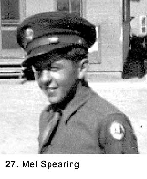 eighteen years old, the same as mine (See Fig. 27). He took a lot of kidding about his looks and more remarks were directed at him by the sergeants about his ability to do certain tasks. But Spearing fooled them all. He put on some weight and through sheer determination developed into a very fine soldier. He tried harder than anyone else, and at the end of our training, nobody was laughing about the little baby-faced guy. He was also a great asset to our crew throughout our time together because, in addition to being fit for the job, he was smart and cheerful. There were some men in the service that had great physical presence but would never be the soldier that Spearing was. Most of the men in our battalion were in their late teens, but about five percent were in their late thirties. About twenty percent fell between that age range. The Army was drafting men up to thirty-eight years old at the time we were called up, including married ones if they had no children. A few years difference in age means a lot more to a teen than it does an older man. Men in their late twenties were looked on as seniors, and those in their late thirties were considered elderly. Most men in the latter group had a difficult time keeping up on the long hikes and with other difficult parts of the training. However, it was the emotional sacrifices that caused them the most anguish. Many of them were married, and it was extremely difficult to be separated from their wives. Also, many had given up careers to enter service, and they wondered about their ability to pick up where they left off after the war was over. Because the members of our gun section were together almost every minute, day and night, the stiffness one feels among strangers or new acquaintances soon melted away. We shared our experiences and challenges we faced in life. I learned about their aspirations, which were different from mine, but many similarities allowed close relationships to be built. As we bonded, many of the differences between us became less obvious. The mindless antics of some of our leaders and the medley of unusual characters in our battery gave us plenty of ammunition for interesting conversations. These were city boys and small-town boys, with different upbringings, thrown together for a common cause. Farmers were exempt from the draft, so those we had volunteered for service. There were tall ones, short ones, smart ones, not so smart ones, and our ages ranged over a twenty-year span. It was amazing how we all jelled into a working unit. We began to know each other well enough we could banter, kid, and playfully downgrade each other. Almost exclusively, we called each other by our surnames. In such an enclosed environment, we soon learned each other's idiosyncrasies and peculiarities, and we played on them. We made fun of Bapst's first name (Lovern), Le Claire's funny sounding home town (Manitowoc, Wisconsin), Thomas's short stature, my tall stature (names like Stretch and Daddy Long Legs were used frequently), Spearing's baby face, Dillon's dislike of taking showers, Crow's deep southern accent, Hughes' antics after spending the evening drinking 3-2 beer all evening at the PX, and Stevens' ineptness. Anybody from the south was called a rebel, from the north you were a Yankee, from Kentucky you were a ridge runner, a farmer was a hick or hay-shaker, and those of us from Chicago gangsters. It was almost always done in a facetious manner, but occasionally someone would carry it to extremes and feelings would get hurt. However, fights were almost nonexistent in our entire battery in those early days of our training. We knew the names of men's girlfriends, and even what kind of relationship they had. Some of the married men brought their wives out to live in the area while we were stationed in Camp Haan, and we got to meet them too. Because of their limited finances, they were usually staying as boarders in private homes in the nearby town of Riverside. Some married men with children were drafted in late 1943, but there were none in our gun section. One of the crew, Jim Grimes (See Fig. 28), got a Dear John letter from his sweetheart telling him that she was going to marry someone else. He was quite upset about it. When he began to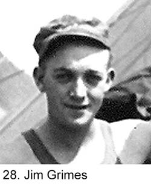 accept the fact that he was better off without her, he was more concerned about how to have the tattoo on his arm removed-a heart with the name Margie inside it. Two subjects that were not discussed-kidding or otherwise-were religion and nationalities. The comradeship our gun section extended, to some degree, to the other men of our battery. Those in the other batteries, with a few exceptions, were like strangers to us and, for many of them, we did not even know their names. The Army's jargon started to infiltrate our everyday conversations. Some terms were: sack time, dog-robber, SOP (standard operating procedure), over the hill (AWOL), chow, tell it to the chaplain, bucking for sergeant, rockers, latrine, mess, deadbeat, deuce-and-a-half, shave tail, and PX. We soon developed a speech pattern laced with swearing, although the frequency varied greatly with individuals. There was also some crass talk with the use of words and expressions like brown-nose, fart-sack, goose him up, SNAFU, chicken s---, short-arm inspection, and clap. We no longer were complaining about something, now it was bitching. Despite our loathing of Montelone and the cadre members, we were picking up some of their vocal expressions. While our conversations in general covered many subjects, we seldom talked about current events. There were no radios in camp accessible to us, and we seldom saw a newspaper not a week or more old. It seemed men who got newspapers from home always lived in small towns where all the news was local. With so little news getting to us, we were some of the least informed-in addition to being the last to be informed-people in the country about how the war was progressing. The weather in the Riverside area of southern California was beautiful. It rained very little, and for most of the days, the temperature was in the seventies or eighties. Every day seemed to be sunny. At night the temperature went down in the fifties and low sixties, and that, along with the fatigue we experienced from the great amount of physical activity we did during the day, allowed for great sleeping. We slept in our underwear. We went to bed lying on our blankets and awoke in the morning under them. Description of Our Outfit The 815th Anti-Aircraft Artillery Battalion was made up of approximately seven hundred fifty men. We always traveled as a battalion whenever we moved from one camp to another, out on a bivouac, on our trip overseas, and from one location to another. The Battalion was broken down into five batteries, called A (Able), B (Baker), C (Charlie), D (Dog), and Headquarters. The four lettered batteries were further broken down into two platoons each with four gun sections in each platoon so a battery had eight gun sections. I was in D-Battery, gun section number one; so when I referred to my outfit verbally, I said "815th Triple A Battalion, Dog Battery, first platoon, first gun section." Headquarters Battery consisted of men involved with supply, training, logistics, and paper shuffling. Each battery had its own kitchen and staff. In addition to the main Battalion Headquarters and supply system, each letter battery had its own facilities in these areas. When our battalion moved in a convoy from one place to another, it consisted of thirty-two trucks pulling 40mm guns, thirty-two trucks pulling M-51 machine gun mounts (They came later in our training.), twenty trucks for headquarters, and ten Jeeps for the officers and high-ranking noncoms, for a total of ninety-four vehicles. We stretched out for several miles. Our 40mm antiaircraft gun was mounted on a platform that sat on a steel frame. It had a ten-foot-long drawbar that was six inches in diameter with an eyelet at the end for attaching to the back of a truck when moving from one place to another. There was also an electrical cord that hooked up to the truck that furnished power to the gun's taillights. The gun would be covered by a form-fitting tarpaulin that snapped into place while traveling or when not in use for a long period of time. When we arrived at our destination, we would unhook the gun from the truck, move it into position, remove the tarp, pull the outriggers out to the sides, remove some safety pins, lower the gun onto four pads ninety degrees apart, and then level the gun with hand cranks that were mounted at the ends of the outriggers. The gun was normally aimed by sighting through cross hairs mounted on each side. There were seats for the trackers behind the cross hairs. There was a director that could also be used to aim the 40mm gun in place of using hand cranks. It was a steel box full of gears, approximately four cubic feet. It sat on a tripod, which also had a leveling mechanism. There was a scope on each side, and the trackers stood on the ground looking through the scopes instead of sitting on the gun seats. The director was usually located about fifteen feet from the gun. It had to be coordinated with the gun by sighting both of them on some distant object and then locking them together. The trackers had six-inch diameter wheels located next to the scopes that were rotated to keep their cross hairs on a moving target. The gears in the box were supposed to build in a lead on a target so if you were tracking a plane, the projectile would be fired out early enough to allow lead-time to reach the plane. When we were using the director, the gun and director were powered by electricity. A gasoline-driven power plant generated the electricity. The gun, director, and power plant were all interconnected with heavy rubber-coated electrical cable. Another pieces of equipment in our gun section was a single .50 caliber machine gun that sat on a tripod. Not too long after we started training, we were issued something called the M-51 mount. It had four .50 caliber machine guns in one unit, and would eventually replace the single gun. The mount consisted of a turret, like those on the top of a heavy bomber. The gunner sat in the middle between two large steel plates with two .50 caliber machine guns mounted on each plate. Each gun fired 750 rounds per minute, so theoretically, the mount could fire 3,000 rounds per minute. This rate of fire was difficult to sustain because it was too hard to feed that much ammunition over any long period of time. The turret operated on electric power furnished by batteries. The gunner controlled both the horizontal and vertical movement with a joystick that had a trigger attached. He sighted a target through crosshairs. The turret was mounted on a chase that was eight-feet square. The introduction of this weapon created a lot of excitement in our battalion because it greatly increased our firepower. It was a very powerful weapon. Unlike the 40mm gun, the M-51 mount could be fired in the traveling position. We kept both the single .50 caliber gun and the mount until after our target practice was complete. We then turned in the single gun to ordinance. 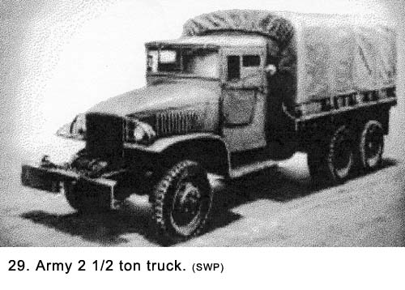 Each gun crew and the equipment that went with them was moved via two two-and-a-half ton trucks. An Army truck was usually referred to as a deuce and a half. (See Fig. 29) One truck pulled the 40 mm gun while the other pulled the M-51 mount. They carried the fifteen-man gun crew and our ammunition, tents, cots, duffel bags, sand bags to build gun pits, power plant, director, rifles, gas masks, basic cooking gear, and everything else we owned in the world. Each truck had wooden ribs arched across the top of the body with canvas tarpaulin over that. The back of the truck was open and had a two-foot high tailgate secured with a chain at each end that could be lowered to aid in unloading. The tailgate also had a stirrup step at both ends for men to board and dismount. The members of our gun section included the following:
When I was in high school, my friends and I had made fun of those who were in the ROTC program. Usually, but not always, they were the students who were the least athletic and were taking military training to get out of participating in the mandatory gym classes. But they had learned how to drill troops, and this had been the ticket for many of them to earn stripes in the army. It wasn't hard to learn to respond to military commands while we were in formation, but it did take a lot of practice to learn how and when to give the orders with the proper cadence and timing that made others respond to them. In our outfit, during our basic training, the officers used this ability to drill troops as their primary criteria for selecting men to make new sergeants. By the time the rest of us caught up to where we knew about the same as the ex-ROTC fellows, most of the sergeant stripes had already been passed out. I was made corporal and given the title of gunner, which meant I was in charge of the 40mm gun crew. My salary rose to $66 a month. The two stripes also meant that I was excused from KP duty. The rest of our gun crew was ranked as follows: Jim Crow was a corporal in charge of the machine gun crew. There were two T-5's, which is a corporal with a T (designating technician) under the two stripes. They were the two truck drivers, Jim Grimes and Williams. Williams also operated the power plant. The other men in the crew were privates and privates first class. The fifteen-man crew was divided into nine men for the 40mm and six for the M-51 mount, although there was some overlapping of duties. My best friends were Joe Bernal, Jim Grimes, and Glenn Le Claire (See Fig. 31), who were all of the same age as I.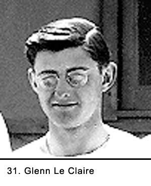 Soon after the stripes were passed out, we learned a good lesson about respecting rank. Even though Dillon was now a sergeant, he still lived in our hut. After months of being equal rank, we thought of him as a friend. Sometimes he got to show off his ROTC training by drilling our platoon when we were marching around the camp. But, in the beginning, he did not have much reason to use his rank, and for that reason, we still thought of him as one of us. We found out different. Dillon did not like to shower or to wash his clothing. His coal black, oily hair was worn slicked back in a pompadour style that made him look like somebody out of a Brylcream hair gel ad. We kidded him at first, then threw obvious hints about his poor hygiene, but it did not get through to him. We debated catching him at the latrine some evening and giving him a GI shower, a process where men would scrub down someone who refused to bathe with stiff-bristled brushes, but nobody had the stomach for it. Despite the fact that the hut we were living in was as open as a screened-in porch, the foul odors from Dillon and his gear were starting to smell up the hut so bad, we could not live with it. Finally, we took action. One evening while he was at the PX, the rest of us put his duffel bag and bedding in the street in front of the hut. Without giving much thought to the ramifications, we were trying to give Dillon a message. Somehow, the word got to the orderly room. All hell broke loose when cadre members, Monteleone and Lieutenant Engler heard about it. They interviewed us individually about why we did it; then we sat and waited for the consequences. Thomas (See Fig.32) was identified as the ringleader but, in fact, we were all equally guilty. We, the culprits, were sure that we were going to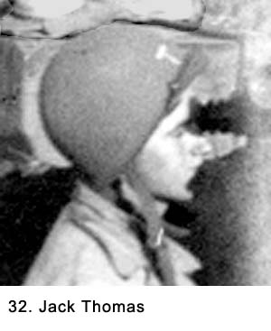 be court-martialed. But it didn't happen and we wondered what was going on. When Dillon got back from the PX he put his things back inside, sprinkled his equipment with lavender talcum powder, then went for his interview. When he returned things were quite tense between us. However, he began to wash his clothing and take showers on a regular basis soon after that. He always made a big thing about letting us know he was just returning from the shower room. He seemed embarrassed about the whole thing and soon got over being mad. We never learned what all transpired that evening but to our amazement, no action was taken against us. In fact, nobody in authority ever mentioned the matter again. We were happy about that, but we also learned our lesson. Don't fool around with sergeants, even when they're friends. Life at Camp Haan continued to be an endless pattern of close order drilling, watching training films, aircraft identification classes, guard duty, working on our heavy equipment, inspections, calisthenics, hikes, listening to the bawdy sergeants, and trying to forget Captain McKee's stories. As the months passed, we grew more comfortable with our surroundings. We experienced a mix of emotions. There were times we griped about conditions and the ever-present burden of authority that kept us always on edge. We would become despondent, and the mood in our hut was not happy. Other times, everything seemed to go right, and something or someone would make us laugh. Stories were told, comments would follow, then one crewmember would try and top the other. There were good and bad days, but most were somewhere in the middle. Rumors, or latrine rumors as we called them, were dispensed on a steady basis. We tried hard to avoid any work relating to special duties, sometimes just by being good soldiers. Some days the work, like a twenty-five mile hike, would wear us out physically as well as mentally. At the end of the day all we wanted to do was lie on our bunk and talk to our friends. Other days when duties consisted mainly of listening to instructions, those evenings were spent at the PX, at a movie, or just visiting around camp. Were we really beginning to adapt to army life? The idea had seemed so implausible only a few months earlier. Chapter 4 < - - - next Table of Contents < - - - return _________________________ Footnotes and Source of Photographs. Copyright, Robert F. Gallagher, 1999 - 2015, all rights reserved on all images and content.
|